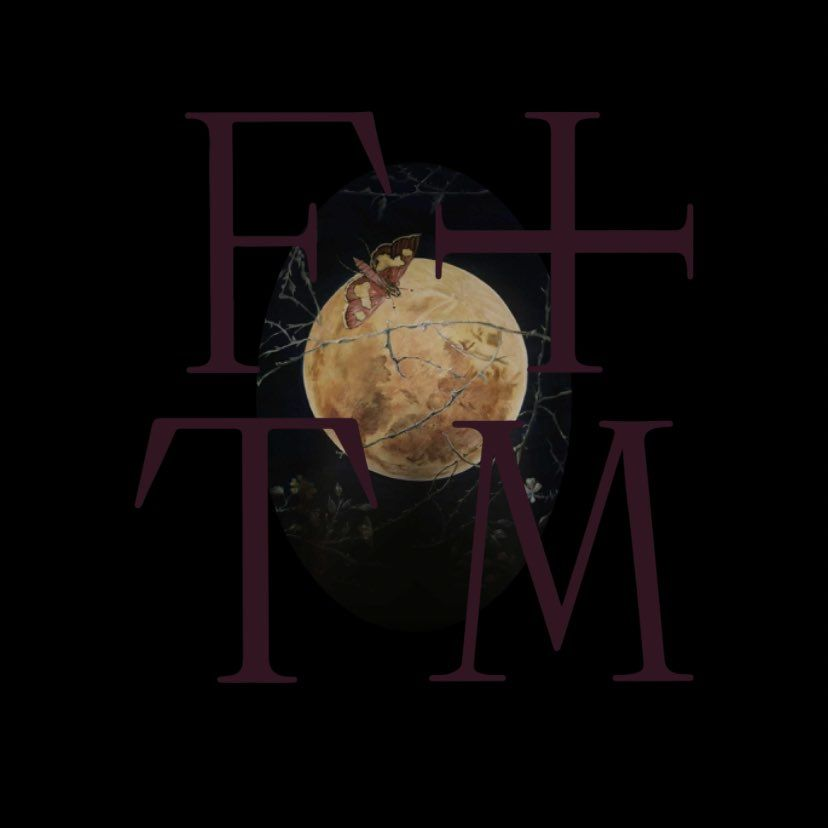

Somos tu fuente principal de noticias, fotos y eventos sobre la banda inglesa
La banda británica de indie rock liderada por la cantante Florence Welch, con Isabella "Machine" Summers (teclados y coros), la banda incluyen a los músicos Robert Ackroyd (guitarra y coros), Chris Hayden (batería, percusión y coros), Mark Saunders (bajo y coros) y Tom Monger (arpa). En el pasado, Welch elogió a su banda por comprender su proceso creativo y afirmó: "He trabajado con la mayoría de ellos durante mucho tiempo y conocen mi estilo, saben cómo escribo, saben lo que quiero".
El sonido de Florence and the Machine ha sido descrito como una combinación de varios géneros, incluidos el rock y el soul. Su música ha recibido varios elogios en los medios de comunicación antes de que ganaran éxito comercial.
